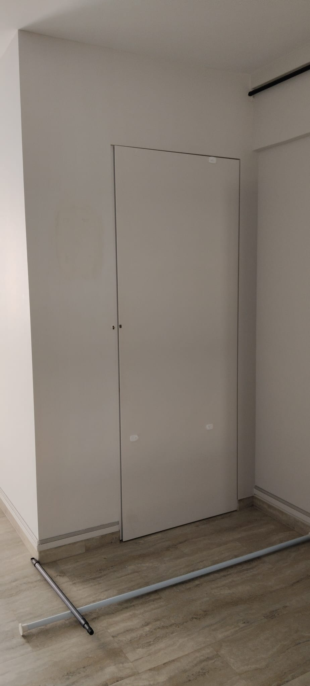

Mounting a TV on an HDB wall: which wall, brackets and safety

Want to mount your TV on an HDB wall but not sure if the wall will hold it? The honest answer is: it depends entirely on the wall. A solid brick or concrete wall takes a TV bracket easily; a hollow or partition wall needs proper cavity anchors or a backing board, or the whole thing can pull out months later. This guide walks through how to tell your wall type, choosing between fixed, tilt and full-motion brackets, the safety checks a proper TV bracket installation in Singapore should cover, hiding cables, and the DIY mistakes that bring TVs crashing down.
First, work out what kind of wall you have
This is the step that decides everything else. Two HDB walls can look identical under paint but behave completely differently once you drill into them. Before any bracket goes up, you need to know whether the wall is solid (brick or concrete) or hollow (a dry partition or drywall stud wall).
The knock test
Rap your knuckles across the wall at TV height. A solid masonry or concrete wall sounds dull, dense and "full" — your knock barely echoes. A hollow partition or drywall section sounds light, drummy and echoey, and the pitch changes as you move sideways because you're passing over the timber or metal studs behind the board. Solid walls hold a TV almost anywhere; hollow walls only hold where there's a stud or a backing board behind them.
| Wall type | Suitable for a TV? | Anchor needed |
|---|---|---|
| Brick / concrete (solid) | Yes — anywhere on the wall | Standard wall plug + masonry screw |
| Hollow block / lightweight masonry | Usually yes | Frame fixing sized to wall density |
| Dry partition / drywall (stud) | Only into studs or a backing board | Cavity anchor into stud, or timber backing board |
| Thin partition near a doorway / box-up | Often not on its own | Backing board fixed across studs |
If you genuinely can't tell, that's reason enough to have an installer check it. Knowing the wall type before drilling is part of any safe handyman or TV mounting job.
Why hollow and partition walls need special handling
On a solid wall, the wall plug grips dense masonry all the way around, so the screw has something to hold onto. A dry partition wall is just two sheets of board with a hollow cavity behind, framed by studs spaced apart. Drive an ordinary plug into the board between studs and it has almost nothing to bite — the screw holds for a while, then the weight and leverage of the TV slowly tear it out of the board.
There are two correct ways to handle this:
- Fix into the studs. Locate the timber or metal studs behind the board and screw the bracket directly into them, so the load sits on the frame, not the board.
- Add a timber backing board. Where the studs don't line up with where the TV needs to go, a timber board is screwed across two or more studs first, giving the bracket a solid, continuous surface to fix into.
This is also why a full-motion bracket on a partition wall needs extra care — the arm multiplies the leverage, so weak anchoring fails much faster.
Choosing the right bracket: fixed, tilt or full-motion
The bracket controls how the TV sits and moves, and how much stress it puts on the wall. Three common types:
- Fixed (flat) bracket. Holds the TV flush and still against the wall. Cheapest, lowest profile, and the least demanding on the wall. Best when you watch straight on from the sofa.
- Tilt bracket. Lets the screen angle downward. Useful when the TV is mounted high — above a console or in a bedroom — so you're not looking at it edge-on.
- Full-motion (swivel) bracket. Extends out and turns side to side. Ideal for a corner, an open-plan living/kitchen layout, or watching from more than one spot. It puts the most leverage on the wall, so anchoring and wall type matter most here.
VESA and weight rating
Two numbers must match before anything goes up: the VESA pattern (the spacing of the mounting holes on the back of your TV) and the bracket's weight rating. A bracket rated well above your TV's weight gives a safer margin. A bracket that's too small or under-rated is a common reason a mount fails, regardless of how good the wall is.
What a proper installer checks before drilling
- Confirms the wall type with a knock test and, if needed, a stud or cavity check.
- Matches the bracket's VESA pattern and weight rating to your specific TV.
- Checks for hidden electrical cables or conduit before drilling into the wall.
- Sets the height and centre line, and levels the bracket so the screen sits straight.
- Chooses the correct plug or anchor for the wall, and adds a backing board on partition walls where required.
- Plans where the cables and any soundbar or shelf will sit before the first hole is made.
Hiding the cables: trunking or in-wall
A mounted TV with cables dangling underneath ruins the look, so plan for the cables before drilling. Two routes:
- Surface trunking. A slim paintable channel that runs the cables neatly down the wall to the console or power point. Quick, reversible and the usual choice for HDB flats, especially on partition walls where you can't cut into the wall.
- In-wall concealment. Running the cables inside the wall gives the cleanest finish, but it means chasing a groove into the wall and is only suitable on certain solid walls. It costs more, takes longer, and isn't always possible — never run mains power inside the wall without the proper fittings.
Common DIY failures (and how to avoid them)
- TV slowly pulling out of the wall. Almost always a partition wall fixed with ordinary plugs instead of stud fixings or a backing board. The screws hold at first, then tear free under the weight.
- Wrong plug for the wall. A plug meant for solid masonry does nothing in a hollow cavity. Matching the plug, bit and screw to the wall is the whole game.
- Drilling into a hidden cable. Wall sockets and switches have conduit running to them — drilling blind above or beside them is a real risk.
- Under-rated or mismatched bracket. A bracket too small for the TV's VESA pattern or weight is a failure waiting to happen.
- Mounting crooked. Without a level and a marked centre line, the TV ends up visibly tilted — and re-drilling leaves extra holes.
Soundbars, shelves and the wider setup
Once the TV is up, it's common to add a soundbar on its own bracket just below the screen, or a floating shelf for a console, router or media box. Both follow the same rule as the TV: the wall type decides the fixing. It's worth deciding their positions before any drilling so everything lines up and the wall is only opened once. The same trip can often cover other small handyman jobs while the tools are out — hanging mirrors, fitting curtain rails or putting up shelves.
HDB-specific things to know
Putting up a TV bracket is everyday handyman work and doesn't need an HDB renovation permit — permits are for works like hacking, flooring and demolition, not drilling a few holes for a mount. Two practical notes:
- Drilling hours. Keep noisy drilling within HDB's permitted hours and avoid late evenings, to stay on good terms with neighbours. HDB publishes guidance on renovation and noise on its website.
- BTO vs resale walls. Newer BTO units often have more dry partition walls, while resale flats tend to have more solid masonry. That changes which anchors are needed — worth mentioning when you book so the right materials come along.
Getting it done by RK E&C
RK E&C is a Singapore-registered renovation and handyman company (UEN 202442767D) that mounts TVs on HDB and condo walls island-wide — checking the wall type first, fitting the correct bracket and anchors, and tidying the cables — as a standalone job or alongside other handyman and renovation work. If you're tackling small jobs around the flat, our guides on fixing a leaking tap and Taobao furniture assembly may help too.
Send a photo of your wall and TV with your postal code and we'll quote you — usually the same day.
Want your TV up safely?
Send us a photo of your wall and TV with your postal code. Fixed-price quote, wall check and correct anchoring included, island-wide.
Prices are indicative of the Singapore market in 2026 and not a quotation. Confirm a fixed price with your provider before work begins.